გმადლობთ, რომ ესტუმრეთ ჩემს გვერდს!
მე ვარ თინათინი, საქართველოდან, პროფესიით იურისტი,
მიზიდავს პერიოდულად სხვადასხვა მიმართულებით განათლების მიღება,
რათა თითოეულ სფეროსთან დაკავშირებით მეტ-ნაკლები წარმოდგენა მქონდეს,
რაც მეხმარება მუდმივ განვითარებაში.
ბავშვობიდან მიზიდავდა ახალ-ახალი ადგილების მონახულება/აღმოჩენა.
2018 წლამდე სახეტიალო არეალს ძირითადად ქვეყნის შიგნით
ტერიტორიები წარმოადგენდა. ჩემი სამშობლო ხომ მდიდარია
ბუნების მრავალფეროვნებით, მთითა და ბარით, ზღვით, მინი უდაბნოთი,
ზამთარში თოვლით და ზაფხულში მწველი მზით...
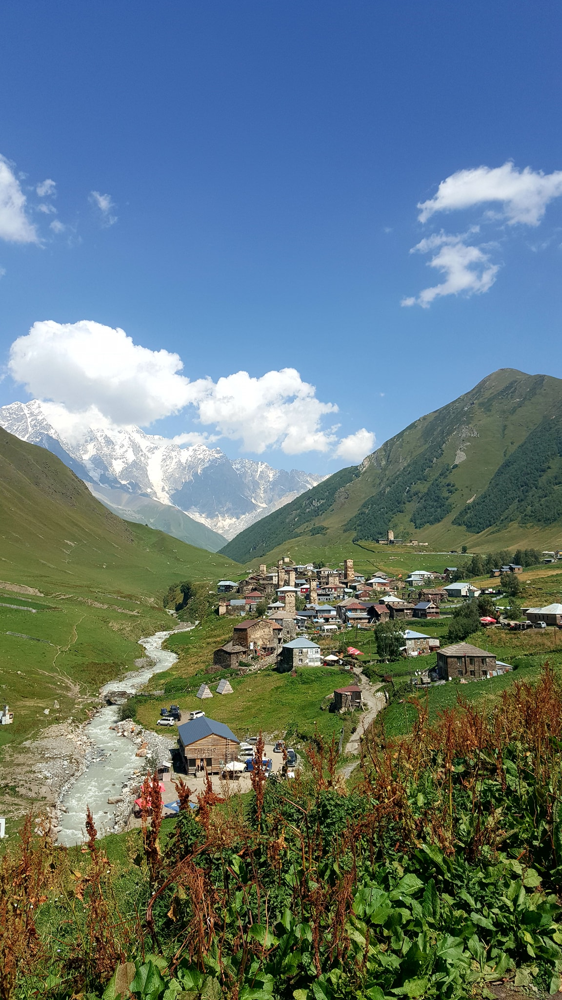
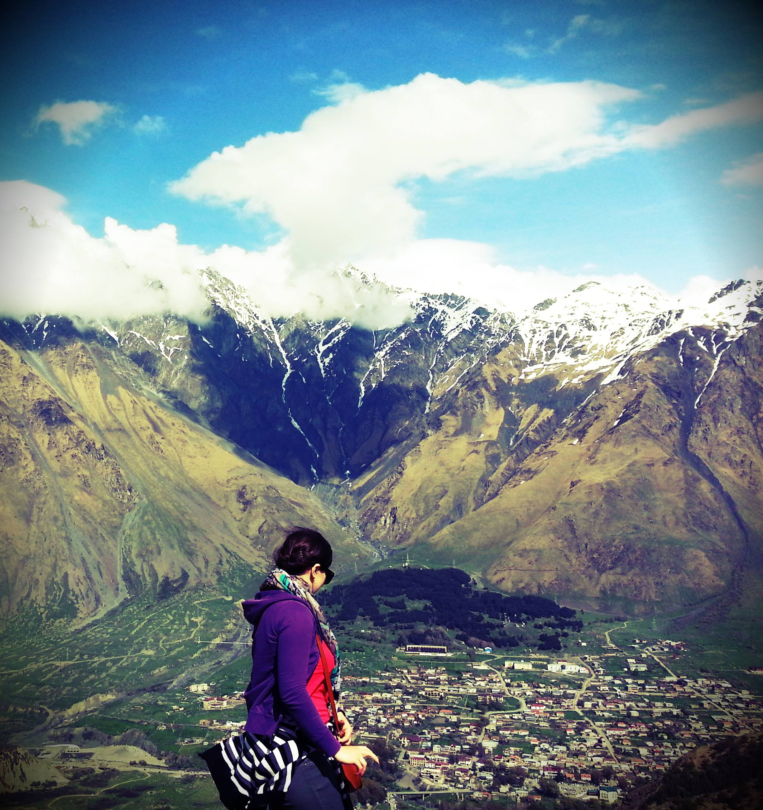
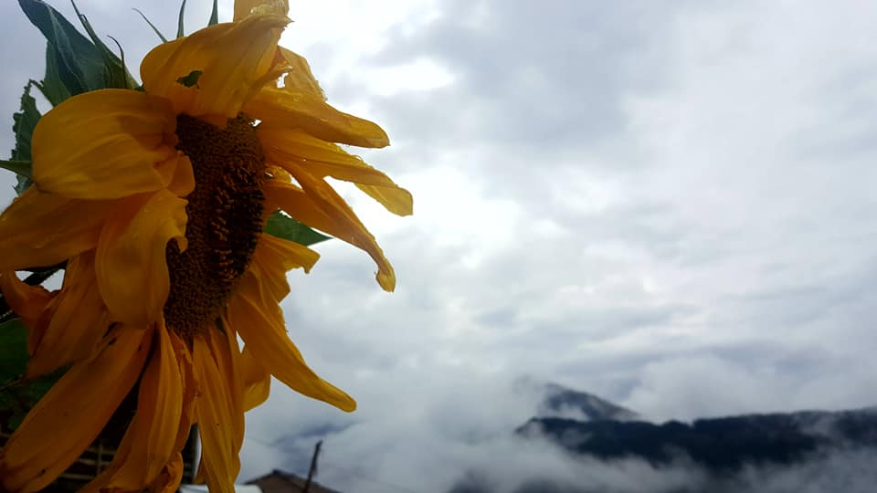
2018 წლიდან დავიწყე ქვეყნის გარეთ მოგზაურობა და მას შემდეგ განსაკუთრებით "მოწამლული" ვარ ამ "დაავადებით", რასაც ხეტიალი ჰქვია დედამიწის გარშემო
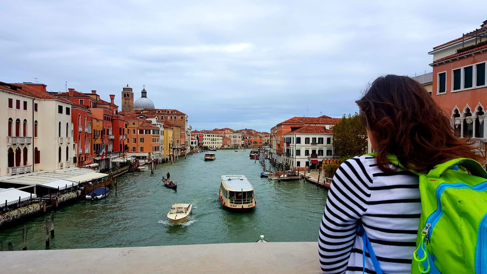
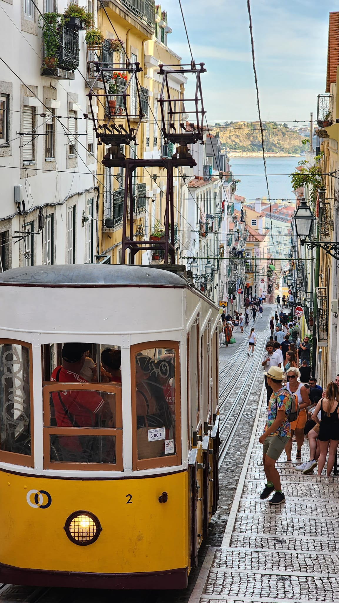
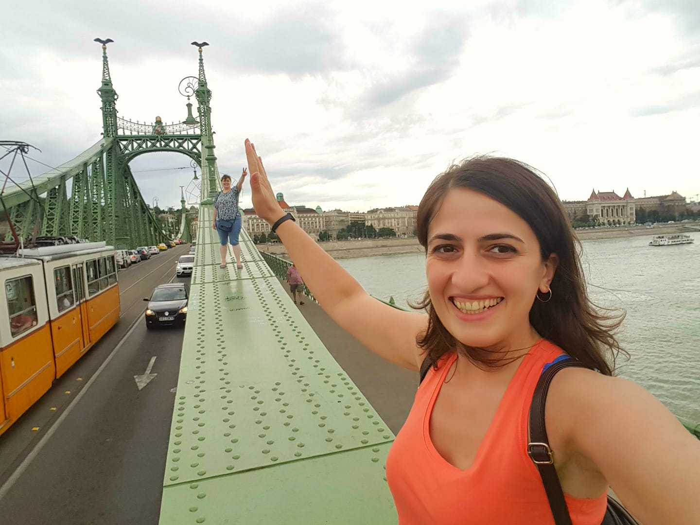
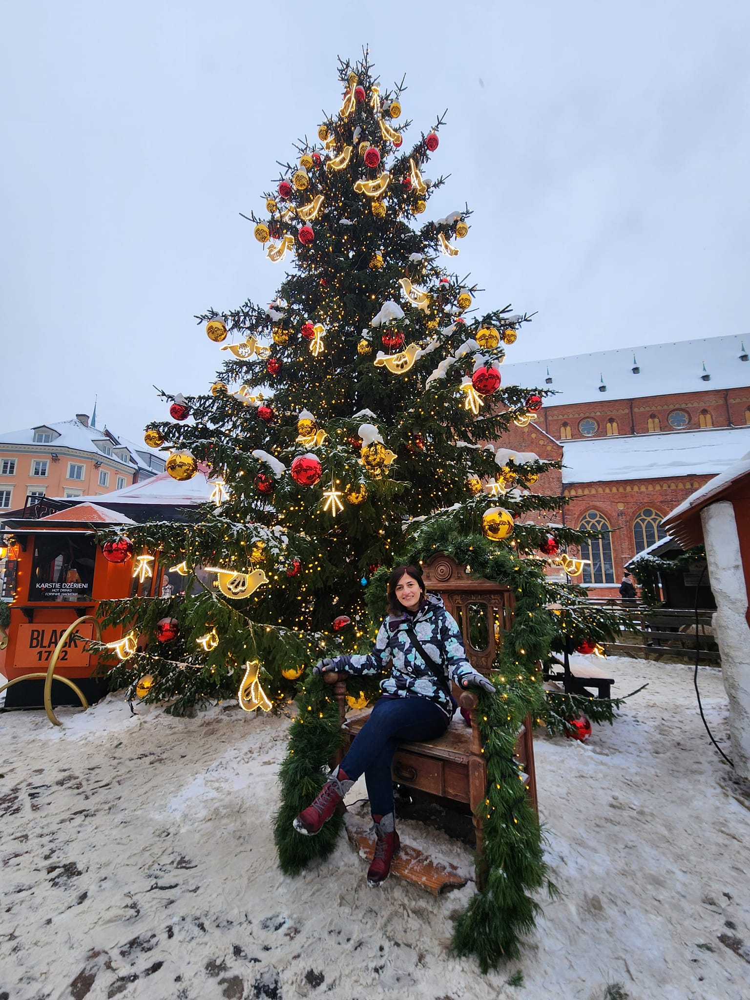
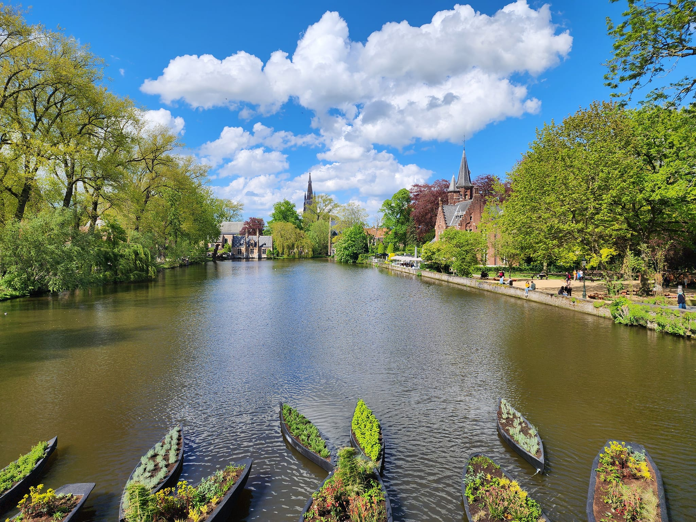
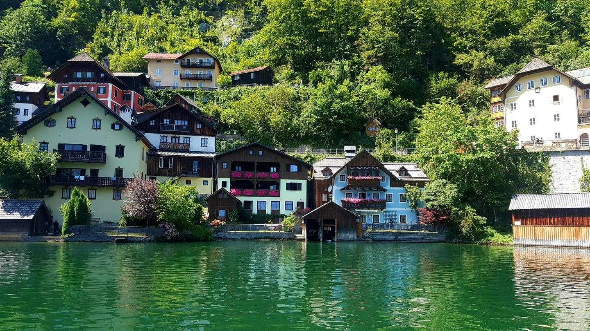
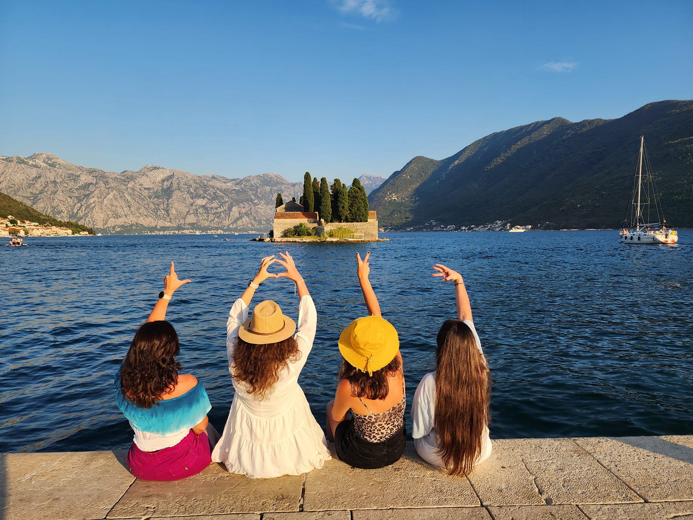
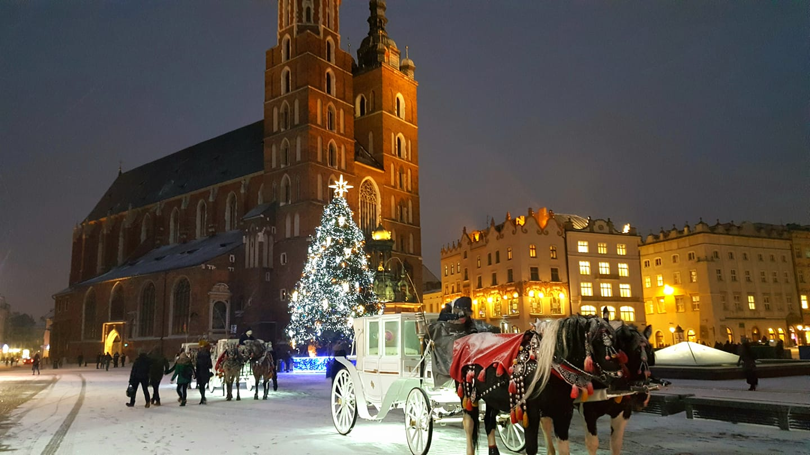